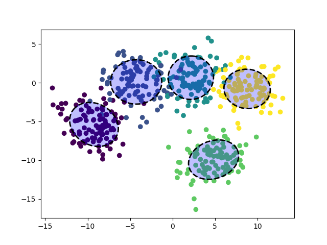

Note
Click here to download the full example code
Compute metrics
Sample file to test metrics.
Out:
--------------------------------------------------
Scores
--------------------------------------------------
Areas:
[[25.05799756 0. 0. 0. 0. ]
[ 0. 27.02559942 0. 0. 0. ]
[ 0. 0. 23.44618116 0. 0. ]
[ 0. 0. 0. 23.10878097 0. ]
[ 0. 0. 0. 0. 21.71335598]]
Ratios:
[[1. 0. 0. 0. 0.]
[0. 1. 0. 0. 0.]
[0. 0. 1. 0. 0.]
[0. 0. 0. 1. 0.]
[0. 0. 0. 0. 1.]]
Ratio (sum v1):
0.0
Ratio (sum v2):
0.0
Scores:
gmm_intersection_area 0.000000
gmm_intersection_area_norm 0.000000
silhouette 0.659055
calinski_h 914.697587
davies_bouldin 0.699378
homogeneity 1.000000
completeness 1.000000
v_measure 1.000000
adj_rs 1.000000
adj_mis 1.000000
dtype: float64
13 if __name__ == '__main__':
14
15 # ------------------
16 # Libraries
17 # ------------------
18 # Generic libraries
19 import pandas as pd
20 import numpy as np
21 import matplotlib.pyplot as plt
22
23 # Basic functions in sklearn
24 from sklearn import datasets
25 from sklearn import metrics
26 from sklearn.datasets import make_blobs
27 from sklearn.decomposition import PCA
28
29 # Own functions
30 from ls2d.utils import _load_pickle
31 from ls2d.metrics import gmm_intersection_matrix
32 from ls2d.metrics import gmm_ratio_score
33 from ls2d.metrics import gmm_intersection_area
34 from ls2d.metrics import create_ellipse_shapely
35 from ls2d.metrics import create_ellipse_mpl
36
37
38 def load_iris_embeddings_pca():
39 """Compute iris PCA embeddings"""
40 # Load iris dataset
41 X, y = iris = datasets.load_iris(return_X_y=True)
42 X = X.astype(np.float32)
43 y = y.astype(np.int64)
44
45 # Compute transform
46 y_pred = PCA(n_components=2).fit_transform(X)
47
48 # Train pca and transform
49 return X, y, y_pred
50
51
52 def load_blob_embeddings():
53 """Create 2D embeddings"""
54 X, y = make_blobs(n_samples=500, centers=5,
55 cluster_std=2,
56 # centers=[[2,2], [1, 10], [10, 1]],
57 # cluster_std=[[1,1], [2,2], [0.5,0.5]],
58 n_features=2, random_state=170)
59 return X, y, X
60
61 # ------------------
62 # Data
63 # ------------------
64 # Create iris samle
65 #X, y, y_pred = load_iris_embeddings_pca()
66 # Create blob sample
67 X, y, y_pred = load_blob_embeddings()
68
69 # Number of clusters
70 n_clusters = len(np.unique(y))
71
72 # ------------------
73 # Metrics
74 # ------------------
75 """
76 .. note: Overall it seems that the gmm_ratio_score is not very useful.
77 Note that minimising the ratios is the same as minimising the
78 intersection areas. The gmm_ratios matrix might be useful if
79 some classes are more important than others.
80 """
81
82 # Intersection are matrix
83 gmm_matrix, label, gmms = \
84 gmm_intersection_matrix(y_pred, y, include_all=False)
85 # Intersection ratios
86 gmm_ratios = gmm_matrix / np.diag(gmm_matrix)
87 # Intersection normalization
88 ratio_sum_v1 = np.sum(gmm_ratios) - np.sum(np.trace(gmm_ratios))
89 # ratio_avg = ratio_sum /
90 ratio_sum_v2 = gmm_ratio_score(y_pred, y, 'sum')
91
92 # Show
93 print("%s\n%s\n%s" % ('-'*50, 'Scores', '-'*50))
94 print("\nAreas:")
95 print(gmm_matrix)
96 print("\nRatios:")
97 print(gmm_ratios)
98 print("\nRatio (sum v1):")
99 print(ratio_sum_v1)
100 print("\nRatio (sum v2):")
101 print(ratio_sum_v2)
102
103 # Compute scores
104 scores = pd.Series(dtype='float')
105 scores['gmm_intersection_area'] = \
106 gmm_intersection_area(gmm_matrix=gmm_matrix)
107 scores['gmm_intersection_area_norm'] = \
108 gmm_intersection_area(gmm_matrix=gmm_matrix, normalize=True)
109 scores['silhouette'] = metrics.silhouette_score(y_pred, y, metric="sqeuclidean")
110 scores['calinski_h'] = metrics.calinski_harabasz_score(y_pred, y)
111 scores['davies_bouldin'] = metrics.davies_bouldin_score(y_pred, y)
112 scores['homogeneity'] = metrics.homogeneity_score(y, y) # useless
113 scores['completeness'] = metrics.completeness_score(y, y) # useless
114 scores['v_measure'] = metrics.v_measure_score(y, y) # useless
115 scores['adj_rs'] = metrics.adjusted_rand_score(y, y) # useless
116 scores['adj_mis'] = metrics.adjusted_mutual_info_score(y, y) # useless
117
118 # Show
119 print("\nScores:")
120 print(scores)
121
122 # ------------------
123 # Show
124 # ------------------
125 # Libraries
126 from matplotlib.patches import Polygon
127
128 # Construct variables
129 means = np.concatenate([
130 gmm.means_ for gmm in gmms
131 ])
132 covs = np.concatenate([
133 gmm.covariances_ for gmm in gmms
134 ])
135
136 # Create ellipses (shapely)
137 ells_shp = [
138 create_ellipse_shapely(m, c)
139 for m, c in zip(means, covs)]
140
141 # Create ellipses (matplotlib)
142 ells_mpl = [
143 create_ellipse_mpl(m, c)
144 for m, c in zip(means, covs)]
145
146 # Create figure
147 fig, ax = plt.subplots()
148 plt.scatter(y_pred[:, 0], y_pred[:, 1], c=y)
149
150 # Display ellipses (shapely)
151 for e in ells_shp:
152 verts1 = np.array(e.exterior.coords.xy)
153 patch1 = Polygon(verts1.T, color='blue', alpha=0.25)
154 ax.add_patch(patch1)
155
156 # Display ellipses (matplotlib)
157 for e in ells_mpl:
158 ax.add_artist(e)
159
160 # Show
161 plt.show()
Total running time of the script: ( 0 minutes 1.023 seconds)